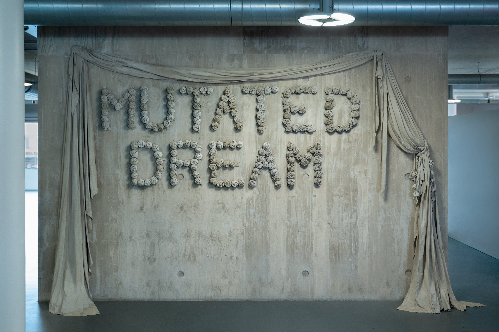
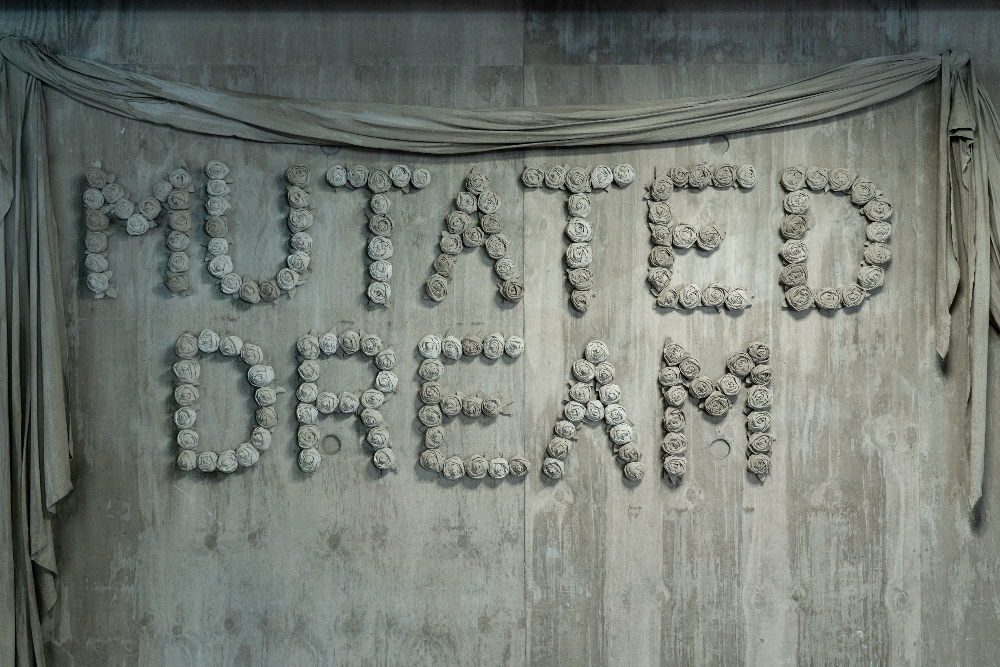
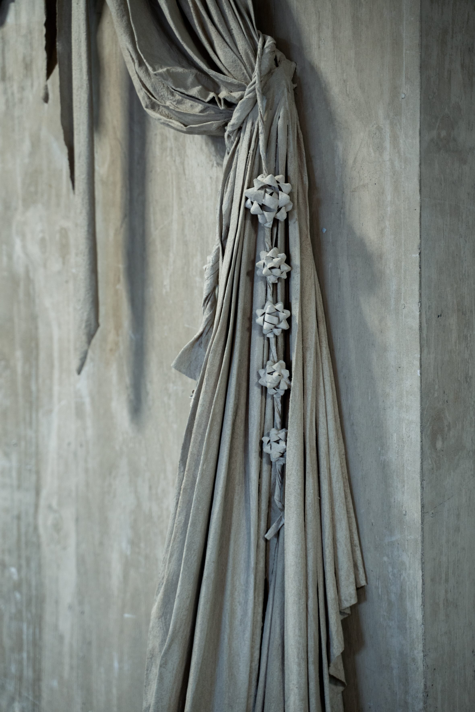
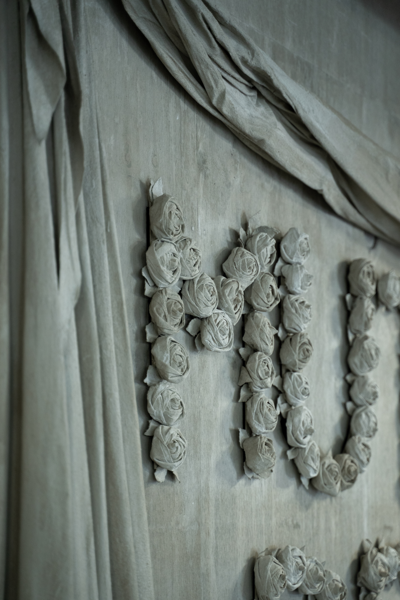
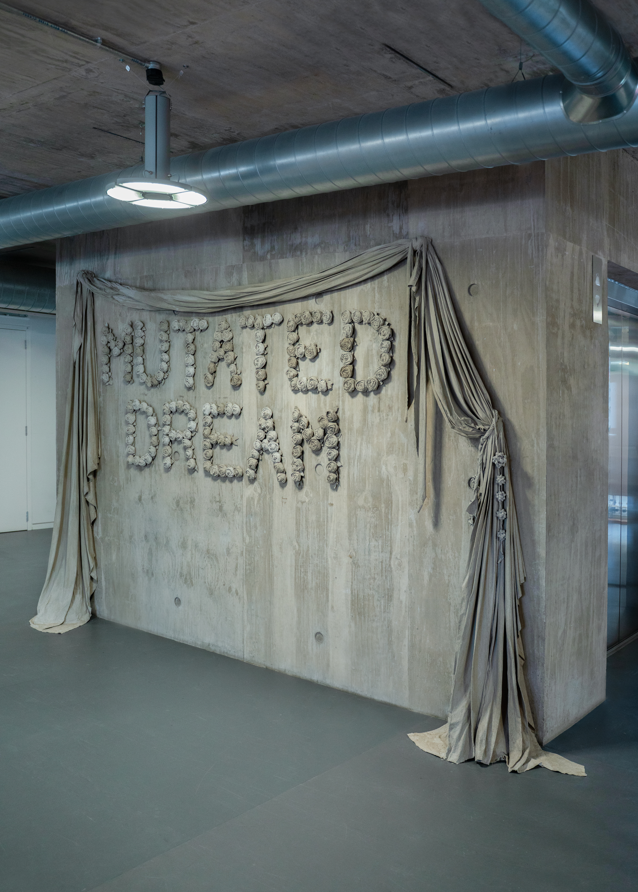

Inaccessible Infrastructure, 2024
Concrete, metal, wood and canvas, 310x400x70 cm
The work Inaccessible Infrastructure is a sculptural-spatial installation that deals with space as a formative force, and patterns of commemoration in public space. The work merges with the exposed concrete wall that is part of the RCA building's foundations. It frames it with curtains that reveal a monumental representation of concrete flowers intertwined into a text, MUTATED DREAM. Concrete gift bows hang from the curtains hem, the interwoven flowers evoke ceremonial mourning wreaths, while the curtains create a theatrical backdrop— together, they serve as symbols of representation and commemoration, offering a critical reading of architecture as a theatrical promise that is inaccessible to daily existence.